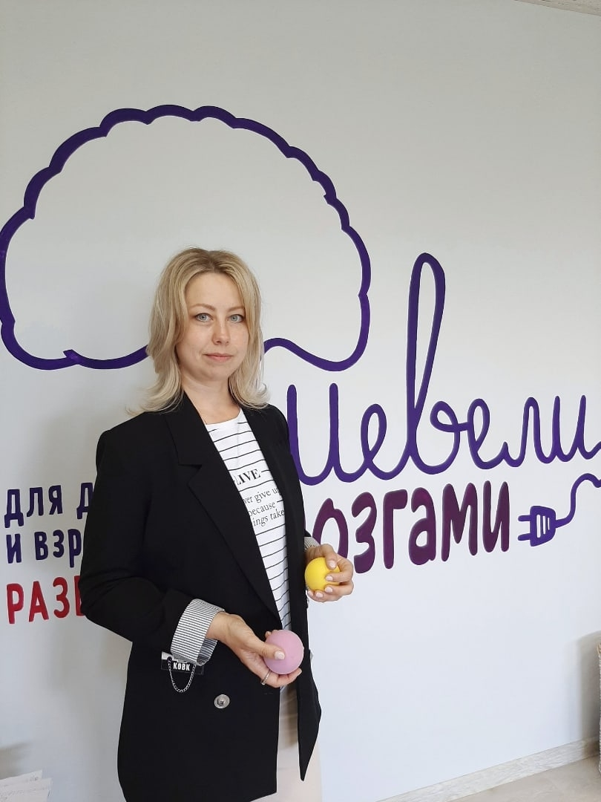
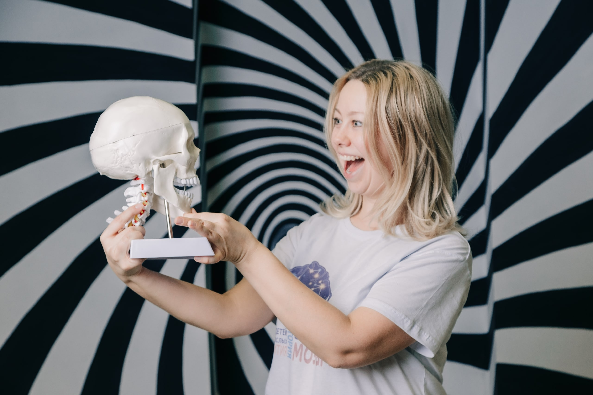
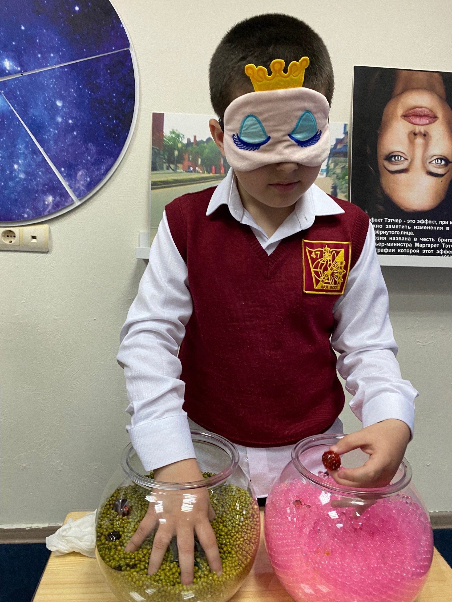
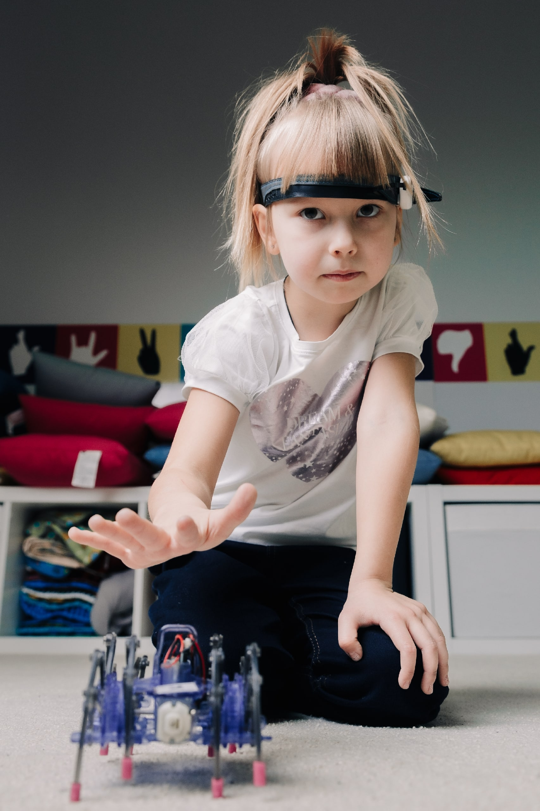
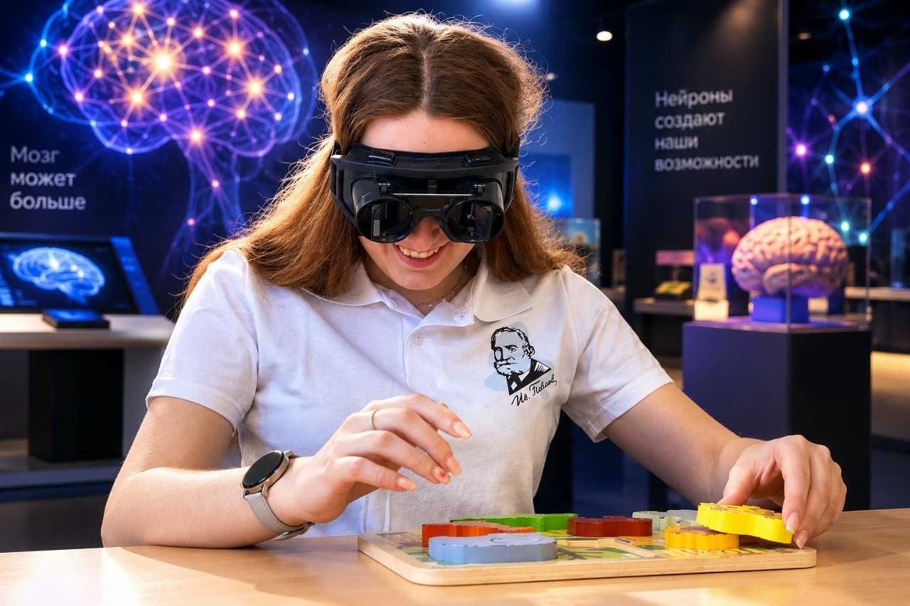
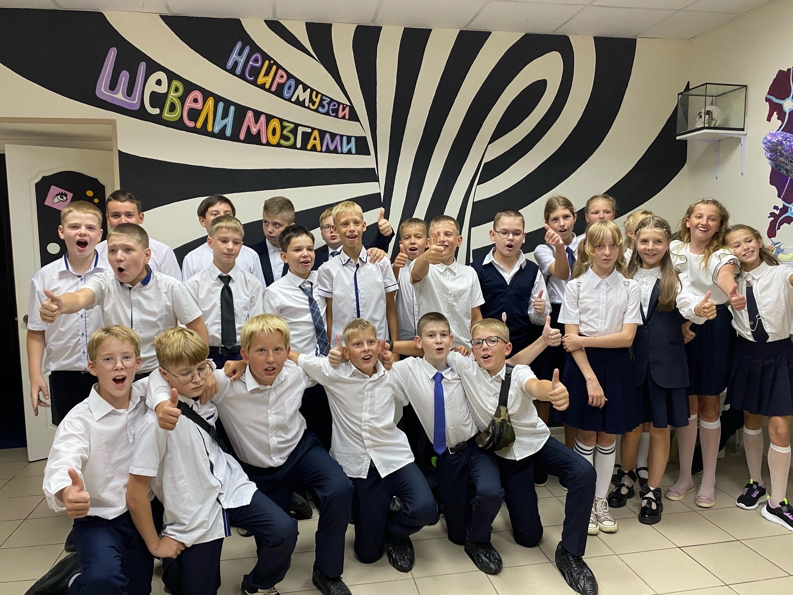
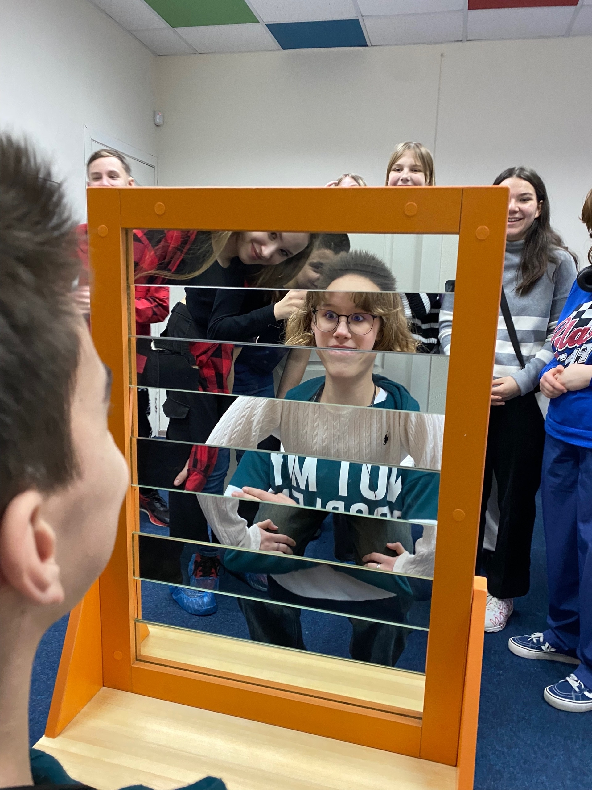
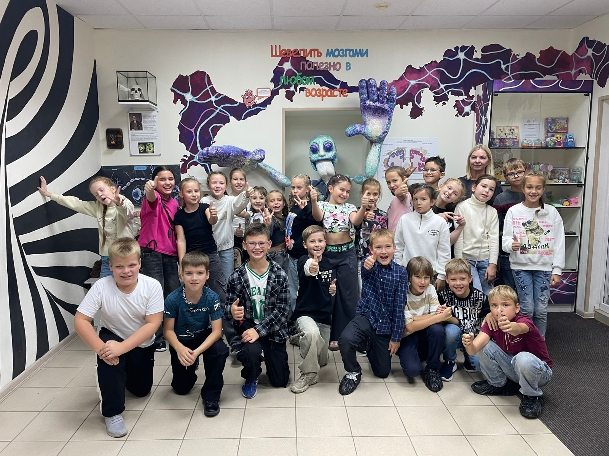
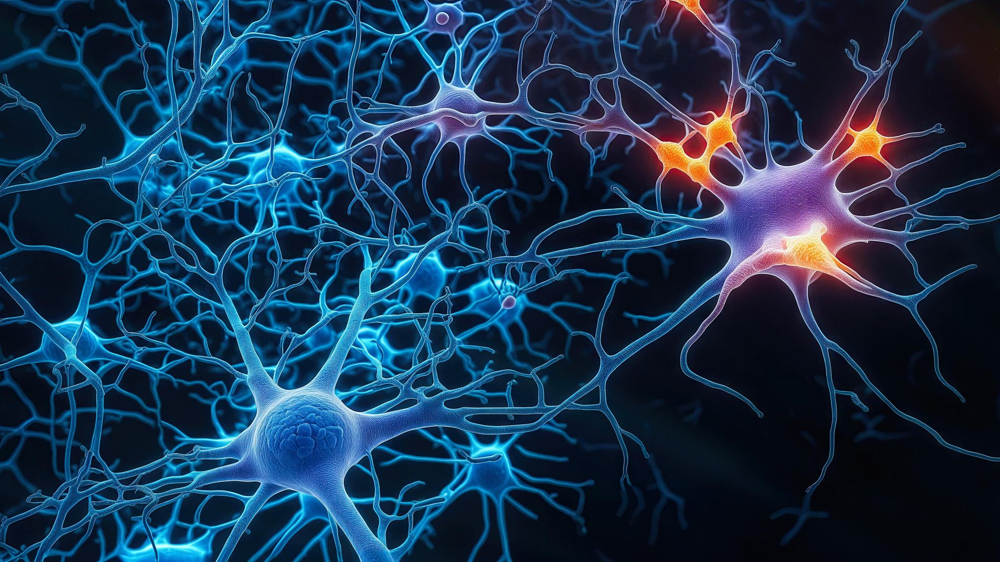

Интерактивный НейроМузей
г. Рязань · ул. Новослободская, 13к1
Интерактивный музей, где дети и взрослые трогают, пробуют и удивляются. 2 часа, 4 зоны, десятки экспонатов.
длится программа
интерактивных
рекомендуемый возраст
довольных гостей

Это первый в Рязани интерактивный нейромузей, созданный детским нейропсихологом Инной Евстигнеевой. Здесь дети и взрослые в игровом формате узнают о работе мозга, нейронных связях и восприятии.
Мы не читаем лекции и не показываем скучные схемы. Мы даём потрогать, попробовать, удивиться. Потому что именно через удивление и игру мозг запоминает лучше всего.
За два часа посетители проходят путь от «как это вообще работает?» до «вау, я тоже так могу!». И уходят с новыми знаниями, которые хочется рассказать друзьям.
«Мы создали музей, в который хочется вернуться — и привести друзей. Потому что мозг — это самое интересное, что есть у человека».
— Инна Евстигнеева, нейропсихолог, основатель музеяИз чего состоит мозг? Как работают нейроны? Собери модель мозга, узнай, за что отвечает каждое полушарие. Здесь ты поймёшь, почему мозг — это не «серое вещество», а живая система, которая постоянно меняется.

Угадай запах с закрытыми глазами. Проверь, как мозг обманывает зрение. Оптические иллюзии, сенсорные игры и эксперименты, которые показывают: мы видим мир не таким, какой он есть, а таким, каким его «рисует» мозг.

Управляй роботом силой мысли! Измерь концентрацию, реакцию, память на нейротренажёрах. Это не фантастика — это нейроинтерфейсы, которые считывают активность мозга и превращают её в действие.

Примерь очки-инвертоскопы — мир перевернётся! Проверь координацию, скорость реакции, работу двух полушарий. Здесь ты узнаешь, почему движение — это не только про мышцы, но и про мозг.

Каждое задание в музее тренирует конкретные навыки. Вот что уносит с собой ребёнок после посещения:
Нейротренажёры учат удерживать фокус и замечать детали.
Эксперименты строятся по принципу «гипотеза → проверка → вывод».
Работа с крупами, фигурами и моделями развивает координацию.
Дети учатся распознавать эмоции — свои и чужие.
После каждого блока ребёнок рассказывает, что понял — своими словами.
Многие задания можно выполнить только вместе.




Всё можно трогать, нажимать и пробовать. Никаких «не бегай» и «не шуми».
Вы не сидите в стороне — вы участвуете вместе с ребёнком. Это семейное приключение.
Программа дополняет уроки биологии и окружающего мира. Есть специальные условия для групп.
Тоже интересно. Многие взрослые уходят с мыслью: «Почему нам в школе так не рассказывали?»
Приезжаете в Рязань на выходные? Загляните к нам — это необычное место, которое запомнится всей семье. Мы рядом с центром, легко добраться.
В стоимость входит интерактивная программа. Продолжительность — 2 часа.
690 ₽
990 ₽
3500 ₽
2 взрослых + 2 детейДля организованных групп (школы, классы, компании) — предварительная запись по телефону. Мы предложим удобное время, и в музее не будет других групп.
«Ходили с сыном 8 лет. Он был в восторге от робота, которым управлял силой мысли. Дома весь вечер рассказывал бабушке, как работает мозг».
— Елена, мама Артёма«Приводили целый класс. Дети не хотели уходить. Отдельное спасибо за то, что всё можно трогать руками — для школьников это самое важное».
— Ольга Петровна, учитель«Думала, будет скучно, но затянуло с первой минуты. Очки-инвертоскопы — это что-то невероятное. Взрослым тоже надо сходить».
— Марина, 34 годаОколо 2 часов. За это время вы проходите все зоны и успеваете попробовать каждый экспонат.
Мы рекомендуем с 6 лет. Дети младше тоже могут — но некоторые задания им будут сложны.
Да, мы работаем по предварительной записи. Так в музее не будет толпы, и каждому хватит времени на все экспонаты.
да. Именинник получит незабываемые эмоции , пройдет научно-познавательный квест с друзьями и получит тематический сувенир в подарок .
Да. До 40 человек ,мы будем только рады.
г. Рязань, ул. Новослободская, 13к1
(район Рязанского цирка, центр города)
Работаем ежедневно с 09:00 до 20:00
Посещение по предварительной записи
Телефон: +7 (953) 741-88-48